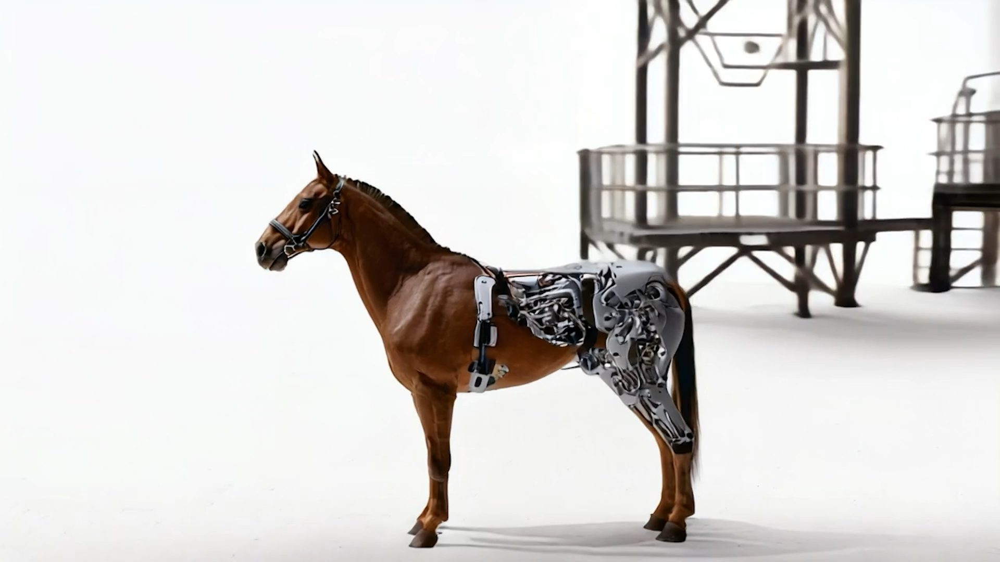

As technology advances, it often amplifies our biases and reinforces stereotypes, shaping the way we see the world. In this rigid, mechanical digital landscape, a lone organic horse appears —a symbol of difference within a system built on uniformity. Initially met with resistance, it begins to transform, integrating with technology. But rather than losing its essence, it evolves into something new: a cybernetic unicorn, bridging the gap between two worlds.
This project explores the tension between technology and individuality, between assimilation and diversity. True progress doesn't come from uniformity but from understanding-embracing differences to create a richer, more interconnected world.